使用覆盖集渲染 Paint Effects 曲线
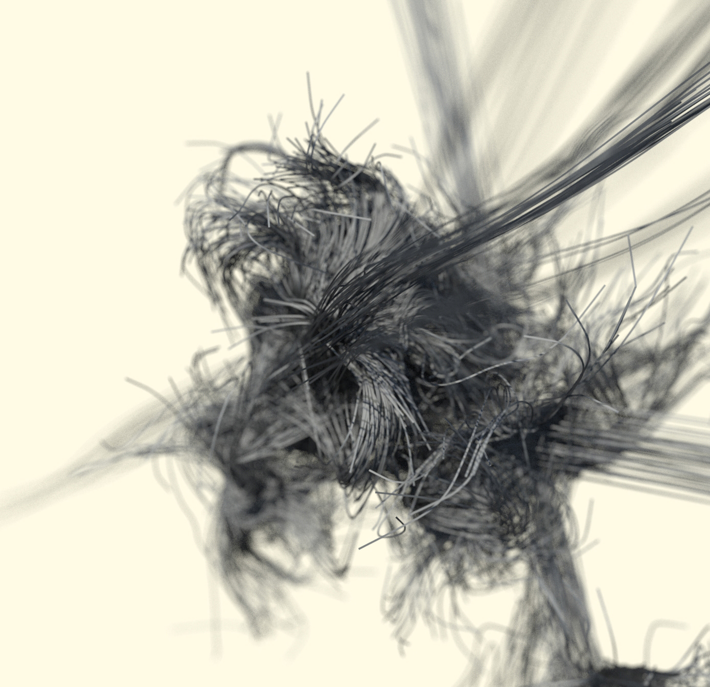
本教程介绍如何将 Maya 的 Paint Effects 与 MtoA 的覆盖集结合使用，来渲染复杂的“抽象”曲线场景。我们将使用 Maya 的 Paint Effects 工具创建一些有趣的形状。然后，我们会将结果转化为曲线并使用覆盖集快速轻松地对其进行渲染。下面我们就开始吧。
要下载对应的场景文件，请单击此处。
Paint Effects 糊状笔刷
- 创建一个新场景。打开“内容浏览器”(Content Browser)窗口。
- 在左侧“Paint Effects”文件夹列表中，应该有一个名为 funmesh 的文件夹。选择该文件夹。
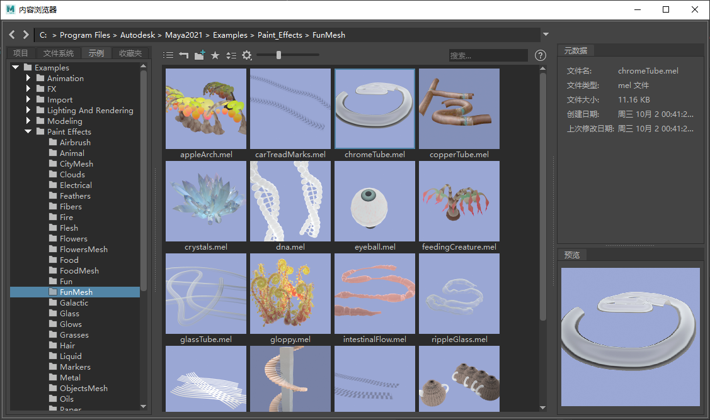
- 在右侧窗格中，应该有一个名为“gloppy.mel”的笔刷。选择该笔刷并在 Maya 视口中进行绘制，直到获得如下图所示的结果（用于此糊状笔划形状的设置包括 - 采样密度(Sample Density)：80；全局比例(Global Scale)：4）。
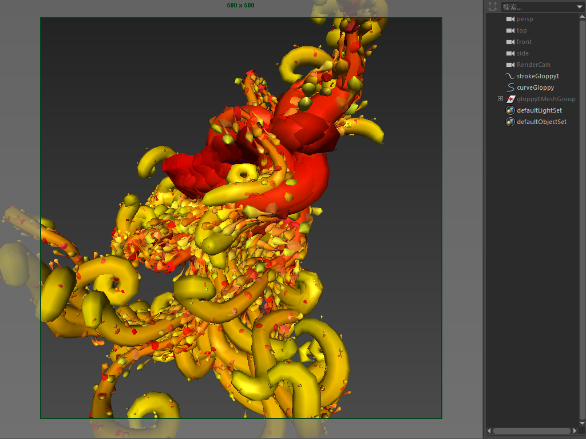
将 Paint Effects 转化为多边形
- 现在，我们要将糊状 Paint Effects 笔刷转化为多边形，以便可以在上面绘制另一个笔刷。选择糊状笔刷，然后转到“修改 > 将 Paint Effects 转化为多边形”(Modify > Convert Paint Effects to Polygons)。
根据下图，现在您应该会得到糊状 Paint Effects 笔刷的多边形版本：
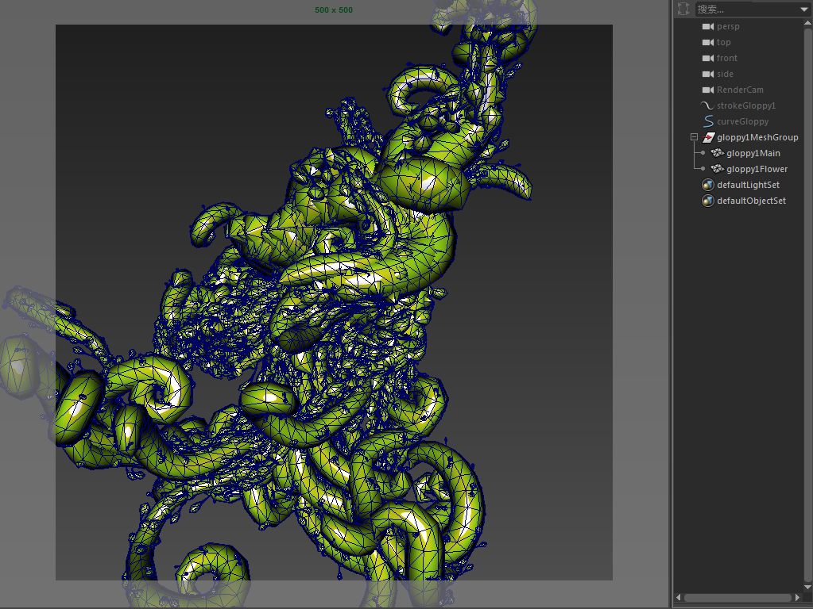
Paint Effects 星系笔刷
- 再次打开“内容浏览器”(Content Browser)窗口。这次，选择“Galactic”文件夹，然后在右侧窗格中选择笔刷“galaxy.mel”。我们将在糊状多边形网格上“自动绘制”此笔刷。
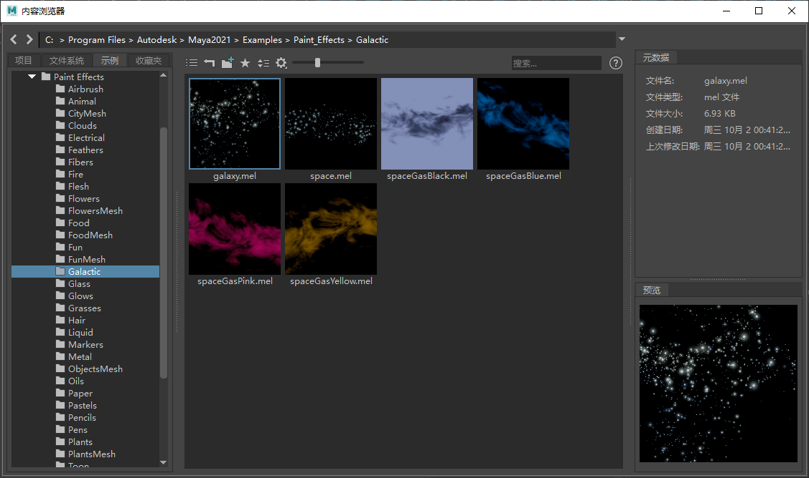
- 选择糊状几何体并亮显“galaxy.mel”Paint Effects 笔刷后，打开“Paint Effects > 自动绘制 > 随机绘制”(Paint Effects > Auto Paint > Paint Random)选项窗口。“自动随机绘制”(Auto Paint Random)会将选定的 Paint Effects 笔刷随机应用到选定的几何体，而无需我们手动操作。“U 向跨度数”(Spans U)和“V 向跨度数”(Spans V)确定应用于几何体的笔划数。注意不要将这个数字设置得太高。否则，Maya 可能需要很长时间来计算所有曲线，而最糟糕的情况则是导致内存不足。将“U 向跨度数”(Spans U)和“V 向跨度数”(Spans V)更改为 20。
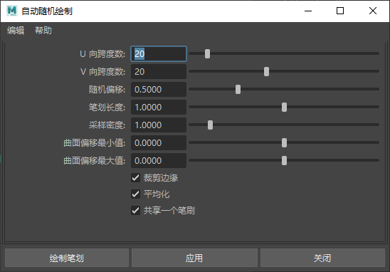
- 单击“应用”(Apply)。您应该会看到，新的“星系”笔划显示在建模和大纲视图窗口中，如下所示：
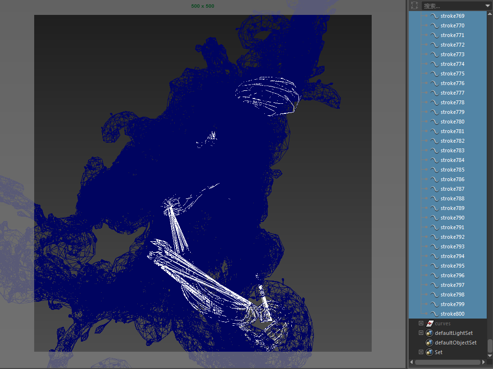
将 Paint Effects 转化为曲线
- 现在，我们可以将这些 Paint Effects 笔划转化为曲线。要执行此操作，请选择“星系”笔划，然后转到_“修改 > 将 Paint Effects 转化为曲线”(Modify > Convert Paint Effects to Curves)_。经过一些时间的计算后，Maya 应该会将所有“星系”笔划都转化为曲线（您可能会注意到，这些曲线看上去与星系 Paint Effects 笔划相去甚远。不用担心，这正是我们想要的效果！）
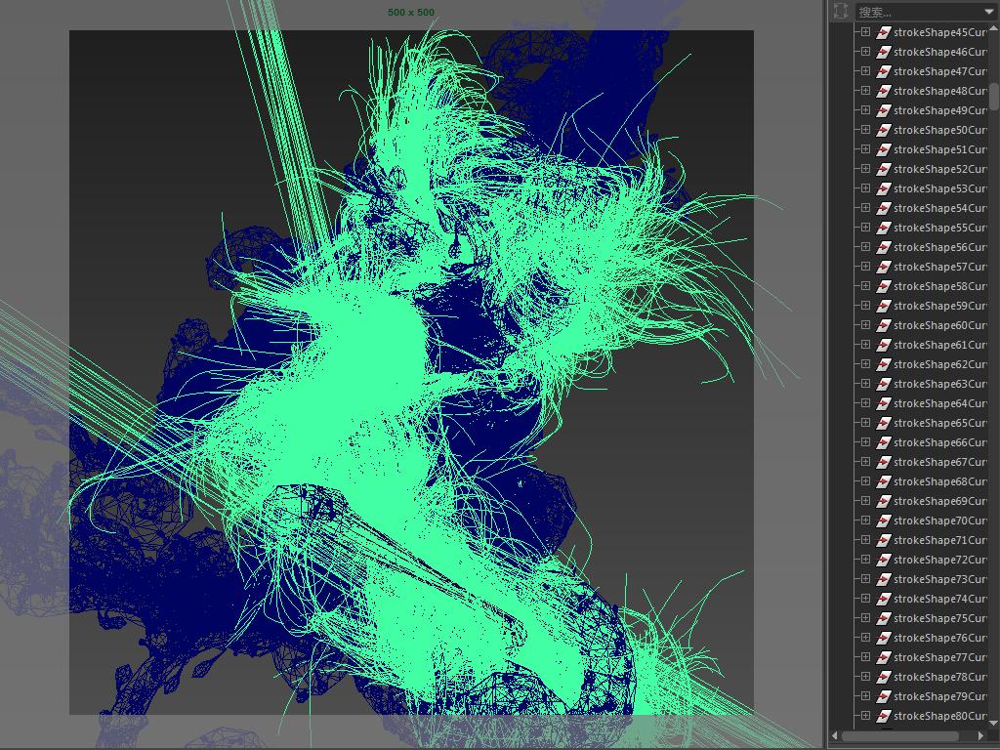
- 选择曲线后，为其创建集（“创建 > 集 > 集”(Create > Sets > Set)）。
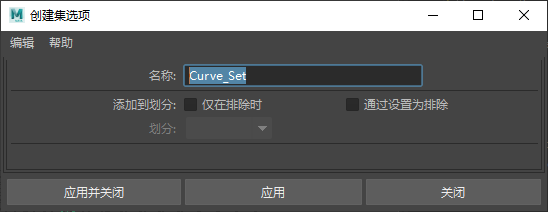
将曲线添加到集
- 选择该集并打开属性编辑器。单击“Arnold”。这时应看到能够添加或移除_覆盖属性_：
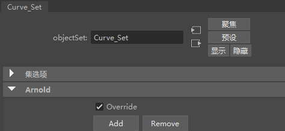
注意：
更快、更高效地渲染多条曲线的方法是使用_曲线收集器_。
您可能会注意到，选择曲线集时存在延迟情况。这是因为操作涉及了大量曲线。
添加附加属性
- 单击“添加”(Add)。此时应该会显示“添加覆盖属性”(Add Override Attribute)窗口。选择以下属性：
- aiRenderCurve - 确定是否渲染曲线。
- aiCurveShader - 用于为曲线指定着色器。将 standard_hair 或 standard_surface 着色器连接到该属性。
- aiCurveWidth - 用于为曲线设置宽度值。选择不小于 0.010 的值以获得一定的厚度，但不要太厚。
- aiMode - 用于选择曲线的渲染模式 -“带状”(Ribbon)或“有厚度”(Thick)。选择“有厚度”(Thick)。
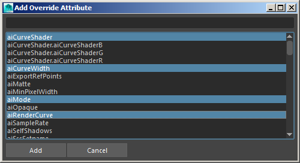
已添加的“覆盖属性”应显示在集的属性编辑器的“附加属性”(Extra Attributes)下。您可以看到，我们已将着色器连接到“Ai 曲线着色器”(Ai Curve Shader)（在本例中为 standard_surface）。“Ai 曲线宽度”(Ai Curve Width)已设置为 0.01。您可以选择增大或减小该值，具体取决于您的个人喜好（所有示例渲染均使用 0.01）。“Ai 模式”(Ai Mode)已设置为“有厚度”(thick)，这在本例中看起来效果更好，因为它具有圆形横截面。
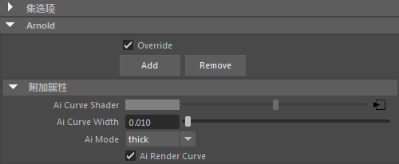
总结
现在可以开始渲染曲线了。下一步是添加一些有趣的照明（如下图中所示的 *physical_sky*），以及摄影机景深。也可以尝试将 Paint Effects“线修改器”添加到“糊状”或“星系”笔划，从而为曲线“设置样式”，使其变成一些更有趣的形状。